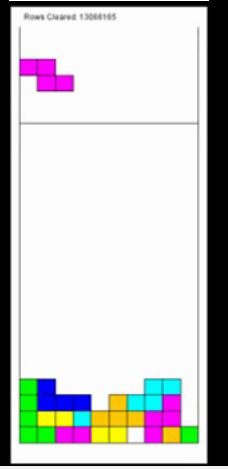

My advisers are Dr. Dave Parker, Dr. Nick Hawes and Dr. Tim Miller (University of Melbourne).I also work with Dr. Bruno Lacerda. I am supported by the Priestly Scholarship.
My research focus is on multi robot planning utilizing formal methods. I am also part of the Intelligent Robotics Lab.
I have an MSc. in Robotics from Carnegie Mellon University and a B.E in Computer Engineering from the National University of Science and Technology (NUST), Pakistan. After my masters I worked as a lecturer at NUST, teaching undergraduates introduction to programming. Before my masters I worked as a software developer at LMKR.
Projects
When to Coordinate - Learning Sparse State Interactions in Multi Robot PoliciesFor my masters' thesis I implemented a two layer Q-learning algorithm for Sparse Interaction MDPs and abstracted it to 3D space for the manipulation robot Baxter.(Here are videos of generated policies Video1, Video2) |
 |
Robot SafetyDuring my masters I also implementing a provably safe version of the the Dynamic Window Approach for obstacle avoidance using ROS.(Here are videos of a very basic setup on a robot Video1,Video2) |  |
Playing TetrisFor the adaptive control and reinforcement learning course we implemented a policy improvement algorithm that learned to play tetris. (Video) |  |
Gesture Recognition using MEMSFor my undergrad final year project, my groupmate and I implemented a proof of concept for gesture recognition using wireless sensor network and Hidden Markov Models.(Link to our project presentation) |  |
Awards
Priestly Scholarship RecipientFulbright ScholarWinning Team Code for Pakistan Islamabad Civic Hackathon 2016Misc
During my bachelors, my team and I designed and fabricated an autonomous robot that could line track and place pegs in stands for a national competition.For the Systems Engineering course in my masters, I was part of a team that made an exhibit which was deployed in the Pittsburgh Children's Museum for 3 days where kids could race dummy robot cars.I'm also interested in teaching kids robotics and was part of CMU-Scitech where we taught middle schoolers arduino and scratch programming. As a lecturer at NUST, I organized and conducted workshops on Lego Robot Programming for school children and was also part of the Theme Committee for the National Engineering Robotics Contest.